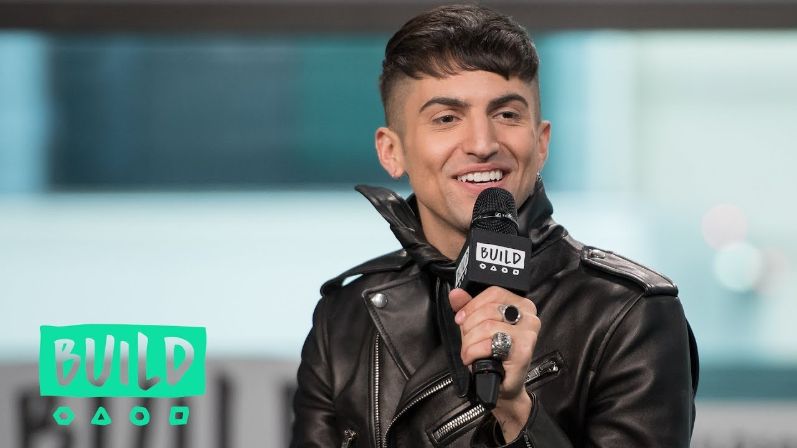

Mitch Grassi

Mitchell Coby Michael Grassi (Arlington, Texas, 24 de julho de 1992), conhecido profissionalmente como Mitch Grassi, é um cantor, compositor e personalidade do YouTube americano, mais conhecido por cantar como Contratenor no grupo acapella Pentatonix. Além disso, também é apresentador de um canal no Youtube, Superfruit, com seu amigo e parceiro Scott Hoying.
Biografia
Mitch Grassi cresceu em Arlington, Texas. É filho de pai italiano, Mike Grassi, e de mãe americana de origens irlandesa, escocesa e galês, Nel Grassi. Mitch conheceu Scott Hoying durante o musical Charlie and The Chocolate Factory enquanto conheceu Kirstie Maldonado durante a escola primária, aos 8 anos. Enquanto estudavam na Martin High School, Mitch, Scott e Kirstie formaram um trio acapella, postando seu primeiro cover de Telephone da cantora pop Lady Gaga no YouTube na tentativa de conhecer o elenco de Glee. Cursou três vezes a TMEA All-State Choir e, durante a sua carreira do ensino médio, atuou em um episódio de Glee onde foi convocado para ser membro do Golden Globets. Ficou em primeiro lugar na competição Teen Talent Follies, cantando uma versão diferente de "Kiss The Air", de Scott Alan. Em 2011, o trio, com a adição de Avi Kaplan e Kevin Olusola, formaram o grupo acapella Pentatonix e então venceram o programa The Sing-Off.
Superfruit
Em agosto de 2013, Scott Hoying e Mitch Grassi criaram o canal de vlog chamado de "Superfruit", onde lançam vídeos todas as terças-feiras. O canal ultrapassou 1 milhão de inscritos durante a semana de Natal do ano de 2014 e continuou a crescer. Eles têm colaborado com várias personalidades famosas, como Tyler Oakley, Grace Helbig, Tori Kelly, Miranda Sings, Todrick Hall, Hart Mamrie, Maisie Williams e Victoria Justice.
Até o momento, três dos seus covers musicais do canal "Frozen Medley feat. Kirstie Maldonado, "BEYONCÉ" e "Evolution of Miley Cyrus", ganharam mais de 18 milhões, 16 milhões e 17 milhões de visualizações, respectivamente.
Em 30 de julho de 2017, lançaram juntos, o seu primeiro álbum Future Friends - Part One
Tracks:
- "Imaginary Parties"
- "Bad 4 Us"
- "Worth It (Perfect)"
- "Vacation"
- "Sexy Ladies"
- "Heartthrob"
- "Future Friends"
Em 15 de Setembro de 2017, lançaram seu segundo álbum: Future Friends - Part Two, assim como um álbum completo contento a parte I e parte II
Tracks:
- "How You Feeling"
- "Hurry Up"
- "Deny U"
- "Goodbye From Lonely"
- "GUY.exe"
- "Fantasy (ft. Amber Liu)"
- "Keep Me Coming"
O álbum completo possuía 2 músicas extras, "Everything (ft. Inara George)" e "Future Friends (Brian Robert Jones Choir Remix)".